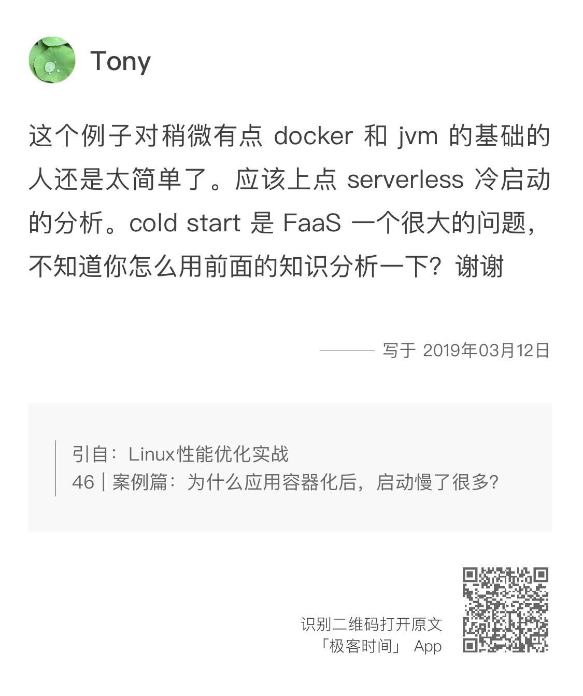
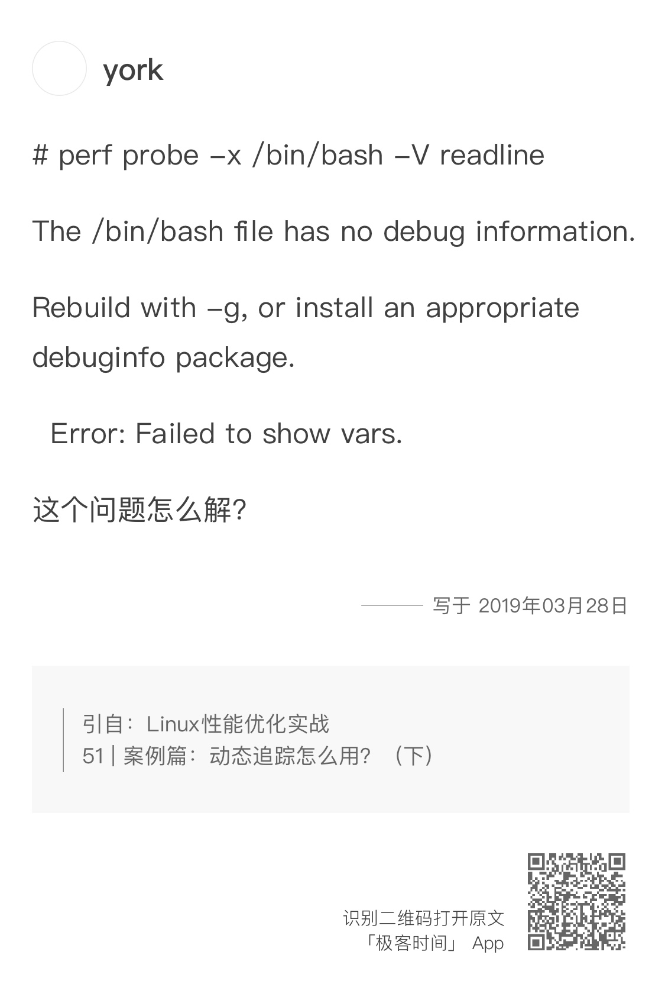
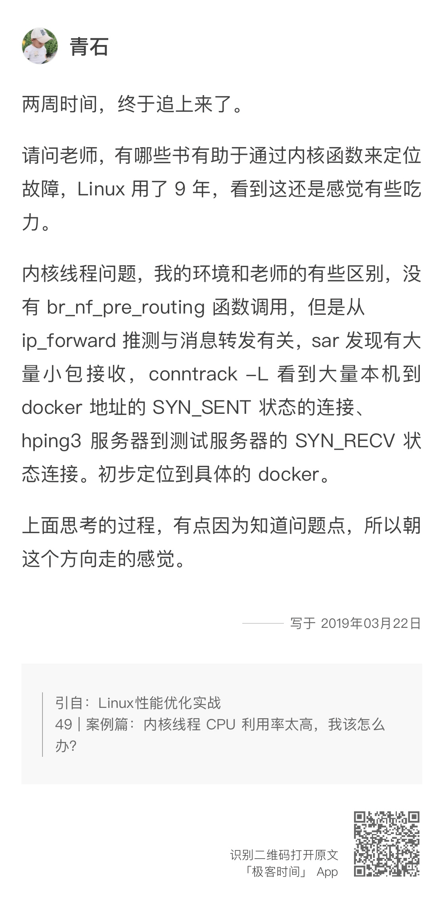

- 00 开篇词 别再让Linux性能问题成为你的绊脚石.md.html
- 01 如何学习Linux性能优化？.md.html
- 02 基础篇：到底应该怎么理解“平均负载”？.md.html
- 03 基础篇：经常说的 CPU 上下文切换是什么意思？（上）.md.html
- 04 基础篇：经常说的 CPU 上下文切换是什么意思？（下）.md.html
- 05 基础篇：某个应用的CPU使用率居然达到100%，我该怎么办？.md.html
- 06 案例篇：系统的 CPU 使用率很高，但为啥却找不到高 CPU 的应用？.md.html
- 07 案例篇：系统中出现大量不可中断进程和僵尸进程怎么办？（上）.md.html
- 08 案例篇：系统中出现大量不可中断进程和僵尸进程怎么办？（下）.md.html
- 09 基础篇：怎么理解Linux软中断？.md.html
- 10 案例篇：系统的软中断CPU使用率升高，我该怎么办？.md.html
- 11 套路篇：如何迅速分析出系统CPU的瓶颈在哪里？.md.html
- 12 套路篇：CPU 性能优化的几个思路.md.html
- 13 答疑（一）：无法模拟出 RES 中断的问题，怎么办？.md.html
- 14 答疑（二）：如何用perf工具分析Java程序？.md.html
- 15 基础篇：Linux内存是怎么工作的？.md.html
- 16 基础篇：怎么理解内存中的Buffer和Cache？.md.html
- 17 案例篇：如何利用系统缓存优化程序的运行效率？.md.html
- 18 案例篇：内存泄漏了，我该如何定位和处理？.md.html
- 19 案例篇：为什么系统的Swap变高了（上）.md.html
- 20 案例篇：为什么系统的Swap变高了？（下）.md.html
- 21 套路篇：如何“快准狠”找到系统内存的问题？.md.html
- 22 答疑（三）：文件系统与磁盘的区别是什么？.md.html
- 23 基础篇：Linux 文件系统是怎么工作的？.md.html
- 24 基础篇：Linux 磁盘I_O是怎么工作的（上）.md.html
- 25 基础篇：Linux 磁盘I_O是怎么工作的（下）.md.html
- 26 案例篇：如何找出狂打日志的“内鬼”？.md.html
- 27 案例篇：为什么我的磁盘I_O延迟很高？.md.html
- 28 案例篇：一个SQL查询要15秒，这是怎么回事？.md.html
- 29 案例篇：Redis响应严重延迟，如何解决？.md.html
- 30 套路篇：如何迅速分析出系统I_O的瓶颈在哪里？.md.html
- 31 套路篇：磁盘 I_O 性能优化的几个思路.md.html
- 32 答疑（四）：阻塞、非阻塞 I_O 与同步、异步 I_O 的区别和联系.md.html
- 33 关于 Linux 网络，你必须知道这些（上）.md.html
- 34 关于 Linux 网络，你必须知道这些（下）.md.html
- 35 基础篇：C10K 和 C1000K 回顾.md.html
- 36 套路篇：怎么评估系统的网络性能？.md.html
- 37 案例篇：DNS 解析时快时慢，我该怎么办？.md.html
- 38 案例篇：怎么使用 tcpdump 和 Wireshark 分析网络流量？.md.html
- 39 案例篇：怎么缓解 DDoS 攻击带来的性能下降问题？.md.html
- 40 案例篇：网络请求延迟变大了，我该怎么办？.md.html
- 41 案例篇：如何优化 NAT 性能？（上）.md.html
- 42 案例篇：如何优化 NAT 性能？（下）.md.html
- 43 套路篇：网络性能优化的几个思路（上）.md.html
- 44 套路篇：网络性能优化的几个思路（下）.md.html
- 45 答疑（五）：网络收发过程中，缓冲区位置在哪里？.md.html
- 46 案例篇：为什么应用容器化后，启动慢了很多？.md.html
- 47 案例篇：服务器总是时不时丢包，我该怎么办？（上）.md.html
- 48 案例篇：服务器总是时不时丢包，我该怎么办？（下）.md.html
- 49 案例篇：内核线程 CPU 利用率太高，我该怎么办？.md.html
- 50 案例篇：动态追踪怎么用？（上）.md.html
- 51 案例篇：动态追踪怎么用？（下）.md.html
- 52 案例篇：服务吞吐量下降很厉害，怎么分析？.md.html
- 53 套路篇：系统监控的综合思路.md.html
- 54 套路篇：应用监控的一般思路.md.html
- 55 套路篇：分析性能问题的一般步骤.md.html
- 56 套路篇：优化性能问题的一般方法.md.html
- 57 套路篇：Linux 性能工具速查.md.html
- 58 答疑（六）：容器冷启动如何性能分析？.md.html
- 加餐（一） 书单推荐：性能优化和Linux 系统原理.md.html
- 加餐（二） 书单推荐：网络原理和 Linux 内核实现.md.html
- 用户故事 “半路出家 ”，也要顺利拿下性能优化！.md.html
- 用户故事 运维和开发工程师们怎么说？.md.html
- 结束语 愿你攻克性能难关.md.html
- 捐赠
58 答疑（六）：容器冷启动如何性能分析？
你好，我是倪朋飞。
专栏更新至今，咱们专栏最后一部分——综合案例模块也要告一段落了。很高兴看到你没有掉队，仍然在积极学习思考、实践操作，并热情地分享你在实际环境中，遇到过的各种性能问题的分析思路以及优化方法。
今天是性能优化答疑的第六期。照例，我从综合案例模块的留言中，摘出了一些典型问题，作为今天的答疑内容，集中回复。为了便于你学习理解，它们并不是严格按照文章顺序排列的。每个问题，我都附上了留言区提问的截屏。如果你需要回顾内容原文，可以扫描每个问题右下方的二维码查看。
问题1：容器冷启动性能分析

在为什么应用容器化后，启动慢了很多中，我们一起分析了容器化所导致的应用程序启动缓慢的问题。简单回顾一下当时的案例，Docker 通过 Cgroups 给容器设置了内存限制，但是容器并未意识到 ，所以还是分配了过多内存，导致被系统 OOM 杀死。
这个案例的根源实际上比较简单，Tony 同学就此提了一个更深入的问题。
我们知道，容器为应用程序的管理带来了巨大的便捷，诸如 Serverless（只关注应用的运行，而无需关注服务器）、FaaS（Function as a Service）等新型的软件架构，也都基于容器技术来构建。不过，虽然容器启动已经很快了，但在启动新容器，也就是冷启动的时候，启动时间相对于应用程序的性能要求来说，还是过长了。
那么，应该怎么来分析和优化冷启动的性能呢？
这个问题最核心的一点，其实就是要弄清楚，启动时间到底都花在哪儿了。一般来说，一个 Serverless 服务的启动，包括：
事件触发（比如收到新的HTTP调用请求）；
资源调度；
镜像拉取；
网络配置；
启动应用等几个过程。
这几个过程所消耗的时间，都可以通过链路跟踪的方式来监控，进而就可以定位出耗时最多的一个或者多个流程。
紧接着，针对耗时最多的流程，我们可以通过应用程序监控或者动态追踪的方法，定位出耗时最多的子模块，这样也就找出了要优化的瓶颈点。
比如，镜像拉取流程，可以通过缓存热点镜像来减少镜像拉取时间；网络配置流程，可以通过网络资源预分配进行加速；而资源调度和容器启动，也可以通过复用预先创建好的容器来进行优化。
问题2：CPU火焰图和内存火焰图有什么不同？
在内核线程 CPU 利用率过高的案例中，我们一起通过 perf 和火焰图工具，生成了内核热点函数调用栈的动态矢量图，并定位出性能问题发生时，执行最为频繁的内核函数。
由于案例分析中，我们主要关注的是 CPU 的繁忙情况，所以这时候生成的火焰图，被称为 on-CPU 火焰图。事实上，除此之外，还有 off-CPU、内存等不同的火焰图，分别表示 CPU 的阻塞和内存的分配释放情况。
所以，李逍遥同学提了出一个很好的问题：同样都是火焰图，CPU 火焰图和内存火焰图，在生成数据时到底有什么不同？
这个问题，恰好问到了最核心的点上。CPU 火焰图和内存火焰图，最大的差别其实就是数据来源的不同，也就是函数堆栈不同，而火焰图的格式还是完全一样的。
对 CPU 火焰图来说，采集的数据主要是消耗 CPU 的函数；
而对内存火焰图来说，采集的数据主要是内存分配、释放、换页等内存管理函数。
举个例子，我们在使用 perf record 时，默认的采集事件 cpu-cycles ，就是采集 on-CPU 数据，而生成的火焰图就是 CPU 火焰图。通过 perf record -e page-fault 将采集事件换成 page-fault 后，就可以采集内存缺页的数据，生成的火焰图自然就成了内存火焰图。
问题3：perf probe失败怎么办？

在动态追踪怎么用中，我们一起通过几个案例，学习了 perf、bcc 等动态追踪工具的使用方法。这些动态追踪方法，可以在不修改代码、不重启服务的情况下，让你动态了解应用程序或内核的执行过程。这对于排查情况复杂、难复现的问题尤其有效。
在使用动态追踪工具时，由于十六进制格式的函数地址并不容易理解，就需要我们借助调试信息，将它们转换为更直观的函数名。对于内核来说，我已经多次提到过，需要安装 debuginfo。不过，针对应用程序又该怎么办呢？
这里其实有两种方法。
第一种方法，假如应用程序提供了调试信息软件包，那你就可以直接安装来使用。比如，对于我们案例中的 bash 来说，就可以通过下面的命令，来安装它的调试信息：
# Ubuntu
apt-get install -y bash-dbgsym
# Centos
debuginfo-install bash
第二种方法，使用源码重新编译应用程序，并开启编译器的调试信息开关，比如可以为 gcc 增加 -g 选项。
问题4：RED法监控微服务应用
在系统监控的综合思路中，我为你介绍了监控系统资源性能时常用的 USE 法。USE 法把系统资源的性能指标，简化成了三类：使用率、饱和度以及错误数。三者之中任一类别的指标过高时，都代表相应的系统资源可能有性能瓶颈。
不过，对应用程序的监控来说，这些指标显然就不合适了。因为应用程序的核心指标，是请求数、错误数和响应时间。那该怎么办呢？这其实，正是 Adam 同学在留言中提到的 RED 方法。
RED 方法，是 Weave Cloud 在监控微服务性能时，结合 Prometheus 监控，所提出的一种监控思路——即对微服务来说，监控它们的请求数（Rate）、错误数（Errors）以及响应时间（Duration）。所以，RED 方法适用于微服务应用的监控，而 USE 方法适用于系统资源的监控。
问题5：深入内核的方法

在定位性能问题时，我们通过 perf、ebpf、systemtap 等各种方法排查时，很可能会发现，问题的热点在内核中的某个函数中。而青石和xfan的问题，就是如何去了解、深入 Linux 内核的原理，特别是想弄清楚，性能工具展示的内核函数到底是什么含义。
其实，要了解内核函数的含义，最好的方法，就是去查询所用内核版本的源代码。这里，我推荐 https://elixir.bootlin.com 这个网站。使用方法也很简单，从左边选择内核版本，再通过内核函数名称去搜索就可以了。
之所以推荐这个网站，是因为它不仅可以让你快速搜索函数定位，还为所有的函数、变量、宏定义等，都提供了快速跳转的功能。这样，当你看到不明白的函数或变量时，点击就可以跳转到相应的定义处。
此外，对于 eBPF来说，除了可以通过内核源码来了解，我更推荐你从 BPF Compiler Collection (BCC) 这个项目开始。BCC 提供了很多短小的示例，可以帮你快速了解 eBPF 的工作原理，并熟悉 eBPF 程序的开发思路。了解这些基本的用法后，再去深入 eBPF 的内部，就会轻松很多。
今天我主要回答这些问题，同时也欢迎你继续在留言区写下疑问和感想，我会持续不断地在留言区跟你交流。希望借助每一次的答疑和交流，可以和你一起，把专栏中的各种知识转化为你的能力。
© 2019 - 2023 Liangliang Lee. Powered by gin and hexo-theme-book.